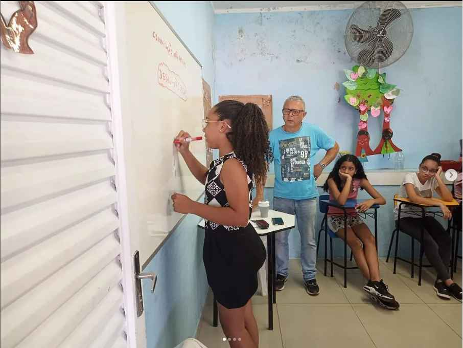

Bem-vindo ao Jornal Crianças em Ação - Vozes Infantis da Comunidade
Descubra as notícias mais recentes e envolventes diretamente da perspectiva das crianças de nossa comunidade. No Associarte News, damos voz aos pequenos jornalistas, proporcionando uma visão única e autêntica dos acontecimentos locais.
Aqui está um vídeo de exemplo, Utilizamos os princípios básicos da evangelização em nossas ações. O amor, a compaixão, a caridade e a honestidade são nossas bases para o bom atendimento e o bom convívio entre nossos funcionários e no contato com o público.
18/03/2022 06h01 · Atualizado há 3 horas